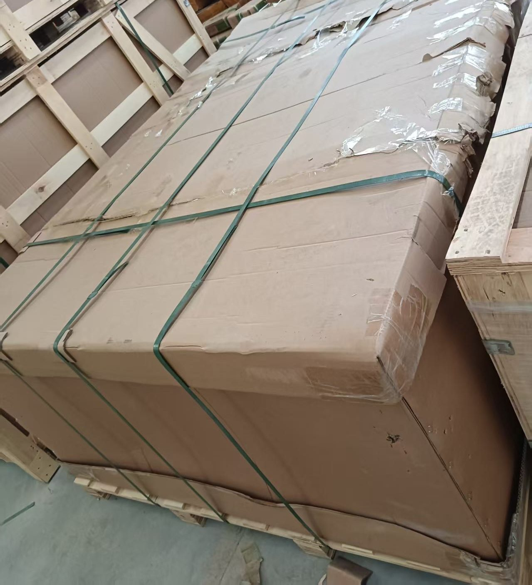

多供应商询价
多家中国供应商发伊朗：汽运询价资料怎么整理
在几家中国工厂采购，再发往伊朗，不要只发一个总重量和总体积。询价资料应先按供应商拆开，再汇总，并写清拟交货的始发仓和目的海关。这份清单帮助逐项核对货物，不代表已确认订车、工厂提货或合并运输安排。
- 每家分别列：品名、HS 编码、毛重 KG、体积 CBM
- 总数不能代替每家供应商的货物明细
- 目的地写马什哈德海关或德黑兰西关 / Shahriyar / Aprin
- 正式报价通过邮件发送，并注明有效期
每家供应商单独一栏
不要只写“杂货一批”，要写具体品名及对应 HS 编码。毛重用 KG，体积用 CBM，并注明数字是最终确认值，还是仍待工厂核实。未知数不要填成零。同一家供应商有多类货物时，也应分行列明，不能用一个笼统品名盖过去。
货物目前在哪个城市，与准备交到哪个始发仓，是两件事。货还在工厂就如实填写，拟交货地点另写。提供工厂地址，不等于已经接受到该地址提货。
给这份询价写清目的海关
只写“伊朗”不够。请明确马什哈德海关，或德黑兰西关（Shahriyar / Aprin）。如果部分货去马什哈德、部分去德黑兰，请分成两组，不要只给一份混在一起的总数。萨拉赫斯 Sarakhs 是进入伊朗的口岸，不是对外销售的交付目的地。
可直接填写的邮件模板
每家供应商重复填写一次下面的货物部分。真实供应商和货物资料仅通过直接业务通信发送，不要放到公开评论或社媒里。
- 邮件主题：中国到伊朗汽运询价——多供应商货物
- 供应商 / 内部编号：[ ]；货物目前所在城市：[ ]
- 拟交货的始发仓：[ ]
- 品名和 HS 编码：[ ]
- 毛重 KG：[ ]；体积 CBM：[ ]；最终值或暂估值：[ ]
- 目的海关：[ ]；拟选乌恰或霍尔果斯线：[ ]
- 电池 / 化学品或需审核的资料：[ ]
- 全部明细填完后的重量、体积合计：[ ]
特殊货物不要藏进总数里
含锂电池的货物，请在对应货物栏直接申报，提交完整 16 节 MSDS 和 UN 包装证书供审核；提交模板不代表已经接受承运。化学品也应一开始就提供资料审核。“普货”两个字不能替代真实货物说明。
收到书面回复后核对什么
逐项核对该票货物的始发交货地点、目的海关及费用范围。我们的服务是 CPT / DAP 仓到关，不是到门，不做 DDP；伊朗清关由买方及其报关代理办理。网站不公布运价，正式邮件报价带有效期。某家工厂的数据修改后，请在原邮件中标明新版，避免旧重量、旧体积和新数据混用。

常见问答
只给总重量和总体积够不够？
不够。建议总数和每家供应商的明细一起提供，才能看清各部分的货物类型、所在地和资料要求。
填完模板就代表能到每家工厂提货吗？
不是。模板用于询价，不是提货预约。服务是仓到关；交货地点和能否合并安排，需要书面确认。